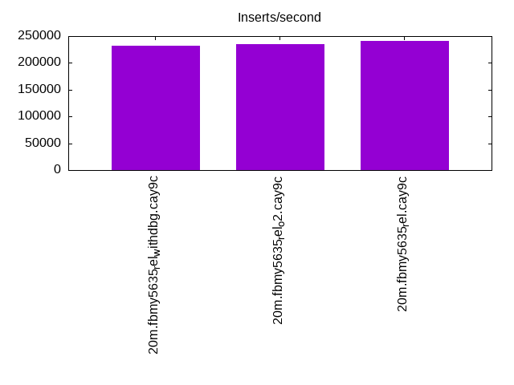
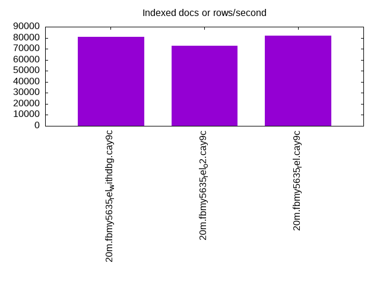
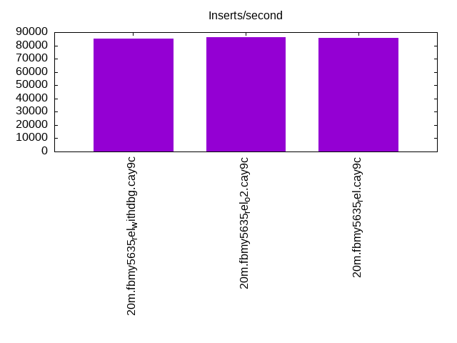
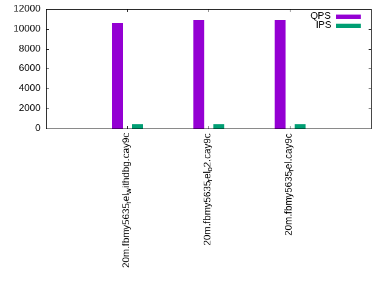
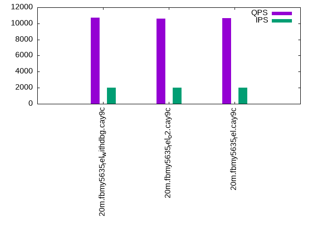
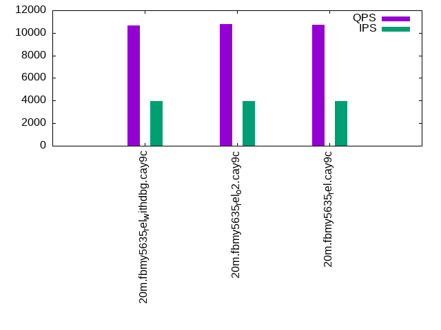

This is a report for the insert benchmark with 20M docs and 4 client(s). It is generated by scripts (bash, awk, sed) and Tufte might not be impressed. An overview of the insert benchmark is here and a short update is here. Below, by DBMS, I mean DBMS+version.config. An example is my8020.c10b40 where my means MySQL, 8020 is version 8.0.20 and c10b40 is the name for the configuration file.
The test server has 8 AMD cores, 16G RAM and an NVMe SSD. It is described here as the Beelink. The benchmark was run with 4 clients and there were 1 or 2 connections per client (1 for queries, 1 for inserts). The benchmark loads 20M rows without secondary indexes, creates secondary indexes, loads another 20M rows then does 3 read+write tests for one hour each that do queries as fast as possible with 100, 500 and then 1000 writes/second/client concurrent with the queries. All clients share one table. The database is cached by the storage engine and the only IO is for writes. Clients and the DBMS share one server. The per-database configs are in the per-database subdirectories here.
The tested DBMS are:
The numbers are inserts/s for l.i0 and l.i1, indexed docs (or rows) /s for l.x and queries/s for q*.2. The values are the average rate over the entire test for inserts (IPS) and queries (QPS). The range of values for IPS and QPS is split into 3 parts: bottom 25%, middle 50%, top 25%. Values in the bottom 25% have a red background, values in the top 25% have a green background and values in the middle have no color. A gray background is used for values that can be ignored because the DBMS did not sustain the target insert rate. Red backgrounds are not used when the minimum value is within 80% of the max value.
| dbms | l.i0 | l.x | l.i1 | q100.1 | q500.1 | q1000.1 |
|---|---|---|---|---|---|---|
| 20m.fbmy5635_rel_withdbg.cay9c | 232558 | 81048 | 85106 | 10577 | 10699 | 10670 |
| 20m.fbmy5635_rel_o2.cay9c | 235294 | 72563 | 86207 | 10889 | 10626 | 10772 |
| 20m.fbmy5635_rel.cay9c | 240964 | 81707 | 85837 | 10930 | 10634 | 10739 |
This table has relative throughput, throughput for the DBMS relative to the DBMS in the first line, using the absolute throughput from the previous table.
| dbms | l.i0 | l.x | l.i1 | q100.1 | q500.1 | q1000.1 |
|---|---|---|---|---|---|---|
| 20m.fbmy5635_rel_withdbg.cay9c | 1.00 | 1.00 | 1.00 | 1.00 | 1.00 | 1.00 |
| 20m.fbmy5635_rel_o2.cay9c | 1.01 | 0.90 | 1.01 | 1.03 | 0.99 | 1.01 |
| 20m.fbmy5635_rel.cay9c | 1.04 | 1.01 | 1.01 | 1.03 | 0.99 | 1.01 |
This lists the average rate of inserts/s for the tests that do inserts concurrent with queries. For such tests the query rate is listed in the table above. The read+write tests are setup so that the insert rate should match the target rate every second. Cells that are not at least 95% of the target have a red background to indicate a failure to satisfy the target.
| dbms | q100.1 | q500.1 | q1000.1 |
|---|---|---|---|
| fbmy5635_rel_withdbg.cay9c | 399 | 1994 | 3989 |
| fbmy5635_rel_o2.cay9c | 399 | 1994 | 3987 |
| fbmy5635_rel.cay9c | 399 | 1994 | 3989 |
| target | 400 | 2000 | 4000 |
l.i0: load without secondary indexes. Graphs for performance per 1-second interval are here.
Average throughput:
Insert response time histogram: each cell has the percentage of responses that take <= the time in the header and max is the max response time in seconds. For the max column values in the top 25% of the range have a red background and in the bottom 25% of the range have a green background. The red background is not used when the min value is within 80% of the max value.
| dbms | 256us | 1ms | 4ms | 16ms | 64ms | 256ms | 1s | 4s | 16s | gt | max |
|---|---|---|---|---|---|---|---|---|---|---|---|
| fbmy5635_rel_withdbg.cay9c | 99.765 | 0.215 | 0.006 | 0.013 | 0.101 | ||||||
| fbmy5635_rel_o2.cay9c | 99.764 | 0.223 | 0.013 | 0.113 | |||||||
| fbmy5635_rel.cay9c | 99.761 | 0.224 | 0.002 | 0.013 | 0.106 |
Performance metrics for the DBMS listed above. Some are normalized by throughput, others are not. Legend for results is here.
ips qps rps rmbps wps wmbps rpq rkbpq wpi wkbpi csps cpups cspq cpupq dbgb1 dbgb2 rss maxop p50 p99 tag 232558 0 0 0.0 120.0 49.7 0.000 0.000 0.001 0.219 21884 72.1 0.094 25 0.7 1.7 0.3 0.101 70125 32276 20m.fbmy5635_rel_withdbg.cay9c 235294 0 0 0.0 119.0 49.2 0.000 0.000 0.001 0.214 21978 72.9 0.093 25 0.7 1.7 0.3 0.113 68526 42654 20m.fbmy5635_rel_o2.cay9c 240964 0 0 0.0 121.9 51.3 0.000 0.000 0.001 0.218 22570 73.2 0.094 24 0.7 1.8 0.3 0.106 70823 41355 20m.fbmy5635_rel.cay9c
l.x: create secondary indexes.
Average throughput:
Performance metrics for the DBMS listed above. Some are normalized by throughput, others are not. Legend for results is here.
ips qps rps rmbps wps wmbps rpq rkbpq wpi wkbpi csps cpups cspq cpupq dbgb1 dbgb2 rss maxop p50 p99 tag 81048 0 0 0.0 31.6 12.2 0.000 0.000 0.000 0.154 252 12.7 0.003 13 1.4 2.4 1.3 0.008 NA NA 20m.fbmy5635_rel_withdbg.cay9c 72563 0 0 0.0 28.1 11.0 0.000 0.000 0.000 0.155 208 12.7 0.003 14 1.4 2.5 1.4 0.007 NA NA 20m.fbmy5635_rel_o2.cay9c 81707 0 0 0.0 32.2 12.6 0.000 0.000 0.000 0.158 228 12.7 0.003 12 1.4 2.4 1.3 0.007 NA NA 20m.fbmy5635_rel.cay9c
l.i1: continue load after secondary indexes created. Graphs for performance per 1-second interval are here.
Average throughput:
Insert response time histogram: each cell has the percentage of responses that take <= the time in the header and max is the max response time in seconds. For the max column values in the top 25% of the range have a red background and in the bottom 25% of the range have a green background. The red background is not used when the min value is within 80% of the max value.
| dbms | 256us | 1ms | 4ms | 16ms | 64ms | 256ms | 1s | 4s | 16s | gt | max |
|---|---|---|---|---|---|---|---|---|---|---|---|
| fbmy5635_rel_withdbg.cay9c | 99.616 | 0.374 | 0.006 | 0.004 | 0.102 | ||||||
| fbmy5635_rel_o2.cay9c | 99.638 | 0.353 | 0.003 | 0.007 | 0.131 | ||||||
| fbmy5635_rel.cay9c | 99.626 | 0.363 | 0.006 | 0.005 | 0.110 |
Performance metrics for the DBMS listed above. Some are normalized by throughput, others are not. Legend for results is here.
ips qps rps rmbps wps wmbps rpq rkbpq wpi wkbpi csps cpups cspq cpupq dbgb1 dbgb2 rss maxop p50 p99 tag 85106 0 16 2.0 150.6 62.6 0.000 0.024 0.002 0.754 19527 69.9 0.229 66 3.5 5.2 1.8 0.102 21734 15987 20m.fbmy5635_rel_withdbg.cay9c 86207 0 3 0.4 153.9 64.0 0.000 0.005 0.002 0.760 19607 70.0 0.227 65 5.1 6.9 1.9 0.131 21876 16033 20m.fbmy5635_rel_o2.cay9c 85837 0 3 0.4 155.6 64.5 0.000 0.005 0.002 0.770 19872 69.1 0.232 64 5.2 6.9 1.9 0.110 21826 15383 20m.fbmy5635_rel.cay9c
q100.1: range queries with 100 insert/s per client. Graphs for performance per 1-second interval are here.
Average throughput:
Query response time histogram: each cell has the percentage of responses that take <= the time in the header and max is the max response time in seconds. For max values in the top 25% of the range have a red background and in the bottom 25% of the range have a green background. The red background is not used when the min value is within 80% of the max value.
| dbms | 256us | 1ms | 4ms | 16ms | 64ms | 256ms | 1s | 4s | 16s | gt | max |
|---|---|---|---|---|---|---|---|---|---|---|---|
| fbmy5635_rel_withdbg.cay9c | 10.120 | 89.866 | 0.013 | 0.001 | 0.009 | ||||||
| fbmy5635_rel_o2.cay9c | 13.051 | 86.937 | 0.011 | 0.001 | 0.015 | ||||||
| fbmy5635_rel.cay9c | 12.678 | 87.313 | 0.008 | 0.001 | nonzero | 0.041 |
Insert response time histogram: each cell has the percentage of responses that take <= the time in the header and max is the max response time in seconds. For max values in the top 25% of the range have a red background and in the bottom 25% of the range have a green background. The red background is not used when the min value is within 80% of the max value.
| dbms | 256us | 1ms | 4ms | 16ms | 64ms | 256ms | 1s | 4s | 16s | gt | max |
|---|---|---|---|---|---|---|---|---|---|---|---|
| fbmy5635_rel_withdbg.cay9c | 99.604 | 0.396 | 0.012 | ||||||||
| fbmy5635_rel_o2.cay9c | 99.556 | 0.444 | 0.013 | ||||||||
| fbmy5635_rel.cay9c | 99.764 | 0.236 | 0.008 |
Performance metrics for the DBMS listed above. Some are normalized by throughput, others are not. Legend for results is here.
ips qps rps rmbps wps wmbps rpq rkbpq wpi wkbpi csps cpups cspq cpupq dbgb1 dbgb2 rss maxop p50 p99 tag 399 10577 15 0.2 6.1 1.4 0.001 0.015 0.015 3.525 40065 50.4 3.788 381 2.8 4.7 5.6 0.009 2653 2303 20m.fbmy5635_rel_withdbg.cay9c 399 10889 33 0.4 7.2 1.9 0.003 0.033 0.018 4.813 41047 50.7 3.770 372 2.8 4.7 6.1 0.015 2685 2190 20m.fbmy5635_rel_o2.cay9c 399 10930 33 0.3 7.2 1.8 0.003 0.033 0.018 4.736 41130 50.7 3.763 371 2.8 4.6 5.9 0.041 2749 2333 20m.fbmy5635_rel.cay9c
q500.1: range queries with 500 insert/s per client. Graphs for performance per 1-second interval are here.
Average throughput:
Query response time histogram: each cell has the percentage of responses that take <= the time in the header and max is the max response time in seconds. For max values in the top 25% of the range have a red background and in the bottom 25% of the range have a green background. The red background is not used when the min value is within 80% of the max value.
| dbms | 256us | 1ms | 4ms | 16ms | 64ms | 256ms | 1s | 4s | 16s | gt | max |
|---|---|---|---|---|---|---|---|---|---|---|---|
| fbmy5635_rel_withdbg.cay9c | 10.323 | 89.618 | 0.056 | 0.002 | nonzero | 0.016 | |||||
| fbmy5635_rel_o2.cay9c | 9.851 | 90.102 | 0.045 | 0.002 | nonzero | 0.016 | |||||
| fbmy5635_rel.cay9c | 10.086 | 89.865 | 0.046 | 0.002 | nonzero | 0.037 |
Insert response time histogram: each cell has the percentage of responses that take <= the time in the header and max is the max response time in seconds. For max values in the top 25% of the range have a red background and in the bottom 25% of the range have a green background. The red background is not used when the min value is within 80% of the max value.
| dbms | 256us | 1ms | 4ms | 16ms | 64ms | 256ms | 1s | 4s | 16s | gt | max |
|---|---|---|---|---|---|---|---|---|---|---|---|
| fbmy5635_rel_withdbg.cay9c | 97.397 | 2.585 | 0.018 | 0.049 | |||||||
| fbmy5635_rel_o2.cay9c | 98.676 | 1.306 | 0.018 | 0.051 | |||||||
| fbmy5635_rel.cay9c | 95.989 | 3.986 | 0.025 | 0.048 |
Performance metrics for the DBMS listed above. Some are normalized by throughput, others are not. Legend for results is here.
ips qps rps rmbps wps wmbps rpq rkbpq wpi wkbpi csps cpups cspq cpupq dbgb1 dbgb2 rss maxop p50 p99 tag 1994 10699 0 0.0 7.4 2.0 0.000 0.000 0.004 1.016 40342 51.1 3.771 382 3.1 3.4 7.2 0.016 2637 2349 20m.fbmy5635_rel_withdbg.cay9c 1994 10626 0 0.0 6.8 1.7 0.000 0.000 0.003 0.890 40018 51.1 3.766 385 3.2 3.4 7.8 0.016 2685 2349 20m.fbmy5635_rel_o2.cay9c 1994 10634 0 0.0 6.6 1.7 0.000 0.000 0.003 0.859 39995 51.1 3.761 384 3.2 3.5 7.7 0.037 2637 2350 20m.fbmy5635_rel.cay9c
q1000.1: range queries with 1000 insert/s per client. Graphs for performance per 1-second interval are here.
Average throughput:
Query response time histogram: each cell has the percentage of responses that take <= the time in the header and max is the max response time in seconds. For max values in the top 25% of the range have a red background and in the bottom 25% of the range have a green background. The red background is not used when the min value is within 80% of the max value.
| dbms | 256us | 1ms | 4ms | 16ms | 64ms | 256ms | 1s | 4s | 16s | gt | max |
|---|---|---|---|---|---|---|---|---|---|---|---|
| fbmy5635_rel_withdbg.cay9c | 8.540 | 91.333 | 0.122 | 0.005 | nonzero | 0.020 | |||||
| fbmy5635_rel_o2.cay9c | 8.833 | 91.054 | 0.107 | 0.005 | nonzero | 0.026 | |||||
| fbmy5635_rel.cay9c | 8.616 | 91.266 | 0.112 | 0.006 | nonzero | 0.020 |
Insert response time histogram: each cell has the percentage of responses that take <= the time in the header and max is the max response time in seconds. For max values in the top 25% of the range have a red background and in the bottom 25% of the range have a green background. The red background is not used when the min value is within 80% of the max value.
| dbms | 256us | 1ms | 4ms | 16ms | 64ms | 256ms | 1s | 4s | 16s | gt | max |
|---|---|---|---|---|---|---|---|---|---|---|---|
| fbmy5635_rel_withdbg.cay9c | 91.940 | 8.010 | 0.050 | 0.057 | |||||||
| fbmy5635_rel_o2.cay9c | 94.384 | 5.585 | 0.031 | 0.048 | |||||||
| fbmy5635_rel.cay9c | 90.794 | 9.166 | 0.037 | 0.002 | 0.069 |
Performance metrics for the DBMS listed above. Some are normalized by throughput, others are not. Legend for results is here.
ips qps rps rmbps wps wmbps rpq rkbpq wpi wkbpi csps cpups cspq cpupq dbgb1 dbgb2 rss maxop p50 p99 tag 3989 10670 12 0.6 14.6 4.7 0.001 0.056 0.004 1.211 39317 53.3 3.685 400 3.6 4.8 10.5 0.020 2637 2333 20m.fbmy5635_rel_withdbg.cay9c 3987 10772 9 0.4 15.7 5.1 0.001 0.037 0.004 1.301 39624 53.5 3.678 397 3.8 5.0 10.5 0.026 2669 2333 20m.fbmy5635_rel_o2.cay9c 3989 10739 10 0.3 15.6 4.9 0.001 0.030 0.004 1.262 39532 53.3 3.681 397 3.7 4.9 10.6 0.020 2669 2317 20m.fbmy5635_rel.cay9c
l.i0: load without secondary indexes
Performance metrics for all DBMS, not just the ones listed above. Some are normalized by throughput, others are not. Legend for results is here.
ips qps rps rmbps wps wmbps rpq rkbpq wpi wkbpi csps cpups cspq cpupq dbgb1 dbgb2 rss maxop p50 p99 tag 232558 0 0 0.0 120.0 49.7 0.000 0.000 0.001 0.219 21884 72.1 0.094 25 0.7 1.7 0.3 0.101 70125 32276 20m.fbmy5635_rel_withdbg.cay9c 235294 0 0 0.0 119.0 49.2 0.000 0.000 0.001 0.214 21978 72.9 0.093 25 0.7 1.7 0.3 0.113 68526 42654 20m.fbmy5635_rel_o2.cay9c 240964 0 0 0.0 121.9 51.3 0.000 0.000 0.001 0.218 22570 73.2 0.094 24 0.7 1.8 0.3 0.106 70823 41355 20m.fbmy5635_rel.cay9c
l.x: create secondary indexes
Performance metrics for all DBMS, not just the ones listed above. Some are normalized by throughput, others are not. Legend for results is here.
ips qps rps rmbps wps wmbps rpq rkbpq wpi wkbpi csps cpups cspq cpupq dbgb1 dbgb2 rss maxop p50 p99 tag 81048 0 0 0.0 31.6 12.2 0.000 0.000 0.000 0.154 252 12.7 0.003 13 1.4 2.4 1.3 0.008 NA NA 20m.fbmy5635_rel_withdbg.cay9c 72563 0 0 0.0 28.1 11.0 0.000 0.000 0.000 0.155 208 12.7 0.003 14 1.4 2.5 1.4 0.007 NA NA 20m.fbmy5635_rel_o2.cay9c 81707 0 0 0.0 32.2 12.6 0.000 0.000 0.000 0.158 228 12.7 0.003 12 1.4 2.4 1.3 0.007 NA NA 20m.fbmy5635_rel.cay9c
l.i1: continue load after secondary indexes created
Performance metrics for all DBMS, not just the ones listed above. Some are normalized by throughput, others are not. Legend for results is here.
ips qps rps rmbps wps wmbps rpq rkbpq wpi wkbpi csps cpups cspq cpupq dbgb1 dbgb2 rss maxop p50 p99 tag 85106 0 16 2.0 150.6 62.6 0.000 0.024 0.002 0.754 19527 69.9 0.229 66 3.5 5.2 1.8 0.102 21734 15987 20m.fbmy5635_rel_withdbg.cay9c 86207 0 3 0.4 153.9 64.0 0.000 0.005 0.002 0.760 19607 70.0 0.227 65 5.1 6.9 1.9 0.131 21876 16033 20m.fbmy5635_rel_o2.cay9c 85837 0 3 0.4 155.6 64.5 0.000 0.005 0.002 0.770 19872 69.1 0.232 64 5.2 6.9 1.9 0.110 21826 15383 20m.fbmy5635_rel.cay9c
q100.1: range queries with 100 insert/s per client
Performance metrics for all DBMS, not just the ones listed above. Some are normalized by throughput, others are not. Legend for results is here.
ips qps rps rmbps wps wmbps rpq rkbpq wpi wkbpi csps cpups cspq cpupq dbgb1 dbgb2 rss maxop p50 p99 tag 399 10577 15 0.2 6.1 1.4 0.001 0.015 0.015 3.525 40065 50.4 3.788 381 2.8 4.7 5.6 0.009 2653 2303 20m.fbmy5635_rel_withdbg.cay9c 399 10889 33 0.4 7.2 1.9 0.003 0.033 0.018 4.813 41047 50.7 3.770 372 2.8 4.7 6.1 0.015 2685 2190 20m.fbmy5635_rel_o2.cay9c 399 10930 33 0.3 7.2 1.8 0.003 0.033 0.018 4.736 41130 50.7 3.763 371 2.8 4.6 5.9 0.041 2749 2333 20m.fbmy5635_rel.cay9c
q500.1: range queries with 500 insert/s per client
Performance metrics for all DBMS, not just the ones listed above. Some are normalized by throughput, others are not. Legend for results is here.
ips qps rps rmbps wps wmbps rpq rkbpq wpi wkbpi csps cpups cspq cpupq dbgb1 dbgb2 rss maxop p50 p99 tag 1994 10699 0 0.0 7.4 2.0 0.000 0.000 0.004 1.016 40342 51.1 3.771 382 3.1 3.4 7.2 0.016 2637 2349 20m.fbmy5635_rel_withdbg.cay9c 1994 10626 0 0.0 6.8 1.7 0.000 0.000 0.003 0.890 40018 51.1 3.766 385 3.2 3.4 7.8 0.016 2685 2349 20m.fbmy5635_rel_o2.cay9c 1994 10634 0 0.0 6.6 1.7 0.000 0.000 0.003 0.859 39995 51.1 3.761 384 3.2 3.5 7.7 0.037 2637 2350 20m.fbmy5635_rel.cay9c
q1000.1: range queries with 1000 insert/s per client
Performance metrics for all DBMS, not just the ones listed above. Some are normalized by throughput, others are not. Legend for results is here.
ips qps rps rmbps wps wmbps rpq rkbpq wpi wkbpi csps cpups cspq cpupq dbgb1 dbgb2 rss maxop p50 p99 tag 3989 10670 12 0.6 14.6 4.7 0.001 0.056 0.004 1.211 39317 53.3 3.685 400 3.6 4.8 10.5 0.020 2637 2333 20m.fbmy5635_rel_withdbg.cay9c 3987 10772 9 0.4 15.7 5.1 0.001 0.037 0.004 1.301 39624 53.5 3.678 397 3.8 5.0 10.5 0.026 2669 2333 20m.fbmy5635_rel_o2.cay9c 3989 10739 10 0.3 15.6 4.9 0.001 0.030 0.004 1.262 39532 53.3 3.681 397 3.7 4.9 10.6 0.020 2669 2317 20m.fbmy5635_rel.cay9c
Insert response time histogram
256us 1ms 4ms 16ms 64ms 256ms 1s 4s 16s gt max tag 0.000 0.000 99.765 0.215 0.006 0.013 0.000 0.000 0.000 0.000 0.101 fbmy5635_rel_withdbg.cay9c 0.000 0.000 99.764 0.223 0.000 0.013 0.000 0.000 0.000 0.000 0.113 fbmy5635_rel_o2.cay9c 0.000 0.000 99.761 0.224 0.002 0.013 0.000 0.000 0.000 0.000 0.106 fbmy5635_rel.cay9c
TODO - determine whether there is data for create index response time
Insert response time histogram
256us 1ms 4ms 16ms 64ms 256ms 1s 4s 16s gt max tag 0.000 0.000 99.616 0.374 0.006 0.004 0.000 0.000 0.000 0.000 0.102 fbmy5635_rel_withdbg.cay9c 0.000 0.000 99.638 0.353 0.003 0.007 0.000 0.000 0.000 0.000 0.131 fbmy5635_rel_o2.cay9c 0.000 0.000 99.626 0.363 0.006 0.005 0.000 0.000 0.000 0.000 0.110 fbmy5635_rel.cay9c
Query response time histogram
256us 1ms 4ms 16ms 64ms 256ms 1s 4s 16s gt max tag 10.120 89.866 0.013 0.001 0.000 0.000 0.000 0.000 0.000 0.000 0.009 fbmy5635_rel_withdbg.cay9c 13.051 86.937 0.011 0.001 0.000 0.000 0.000 0.000 0.000 0.000 0.015 fbmy5635_rel_o2.cay9c 12.678 87.313 0.008 0.001 nonzero 0.000 0.000 0.000 0.000 0.000 0.041 fbmy5635_rel.cay9c
Insert response time histogram
256us 1ms 4ms 16ms 64ms 256ms 1s 4s 16s gt max tag 0.000 0.000 99.604 0.396 0.000 0.000 0.000 0.000 0.000 0.000 0.012 fbmy5635_rel_withdbg.cay9c 0.000 0.000 99.556 0.444 0.000 0.000 0.000 0.000 0.000 0.000 0.013 fbmy5635_rel_o2.cay9c 0.000 0.000 99.764 0.236 0.000 0.000 0.000 0.000 0.000 0.000 0.008 fbmy5635_rel.cay9c
Query response time histogram
256us 1ms 4ms 16ms 64ms 256ms 1s 4s 16s gt max tag 10.323 89.618 0.056 0.002 nonzero 0.000 0.000 0.000 0.000 0.000 0.016 fbmy5635_rel_withdbg.cay9c 9.851 90.102 0.045 0.002 nonzero 0.000 0.000 0.000 0.000 0.000 0.016 fbmy5635_rel_o2.cay9c 10.086 89.865 0.046 0.002 nonzero 0.000 0.000 0.000 0.000 0.000 0.037 fbmy5635_rel.cay9c
Insert response time histogram
256us 1ms 4ms 16ms 64ms 256ms 1s 4s 16s gt max tag 0.000 0.000 97.397 2.585 0.018 0.000 0.000 0.000 0.000 0.000 0.049 fbmy5635_rel_withdbg.cay9c 0.000 0.000 98.676 1.306 0.018 0.000 0.000 0.000 0.000 0.000 0.051 fbmy5635_rel_o2.cay9c 0.000 0.000 95.989 3.986 0.025 0.000 0.000 0.000 0.000 0.000 0.048 fbmy5635_rel.cay9c
Query response time histogram
256us 1ms 4ms 16ms 64ms 256ms 1s 4s 16s gt max tag 8.540 91.333 0.122 0.005 nonzero 0.000 0.000 0.000 0.000 0.000 0.020 fbmy5635_rel_withdbg.cay9c 8.833 91.054 0.107 0.005 nonzero 0.000 0.000 0.000 0.000 0.000 0.026 fbmy5635_rel_o2.cay9c 8.616 91.266 0.112 0.006 nonzero 0.000 0.000 0.000 0.000 0.000 0.020 fbmy5635_rel.cay9c
Insert response time histogram
256us 1ms 4ms 16ms 64ms 256ms 1s 4s 16s gt max tag 0.000 0.000 91.940 8.010 0.050 0.000 0.000 0.000 0.000 0.000 0.057 fbmy5635_rel_withdbg.cay9c 0.000 0.000 94.384 5.585 0.031 0.000 0.000 0.000 0.000 0.000 0.048 fbmy5635_rel_o2.cay9c 0.000 0.000 90.794 9.166 0.037 0.002 0.000 0.000 0.000 0.000 0.069 fbmy5635_rel.cay9c